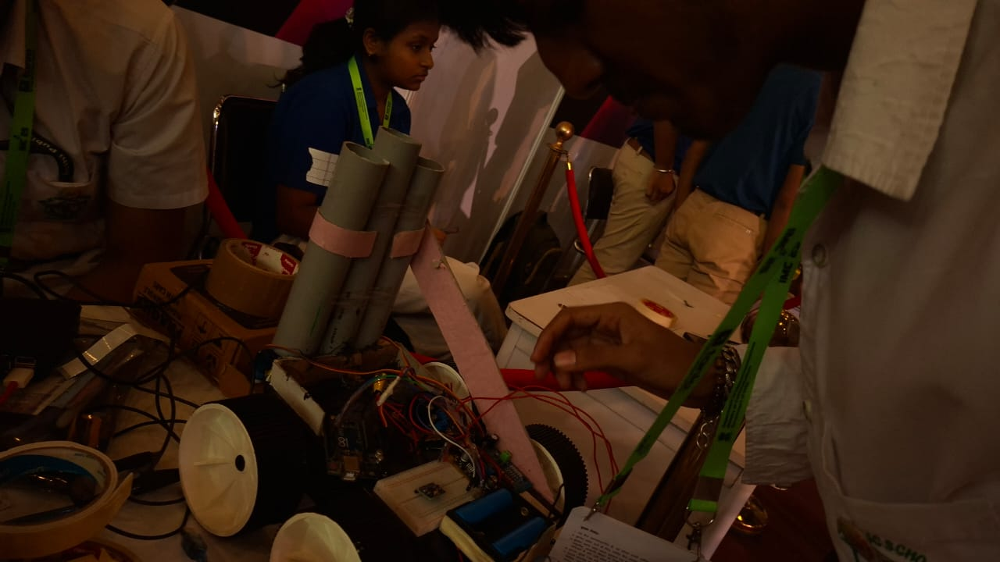

Arnav Goyal
TECH HEAD
[ Robodex ]
to building administrative systems like 'Robodex'. I thrive on mentoring teammates through complex hardware and software problems, leading by example to ensure our collective success and push our boundaries.